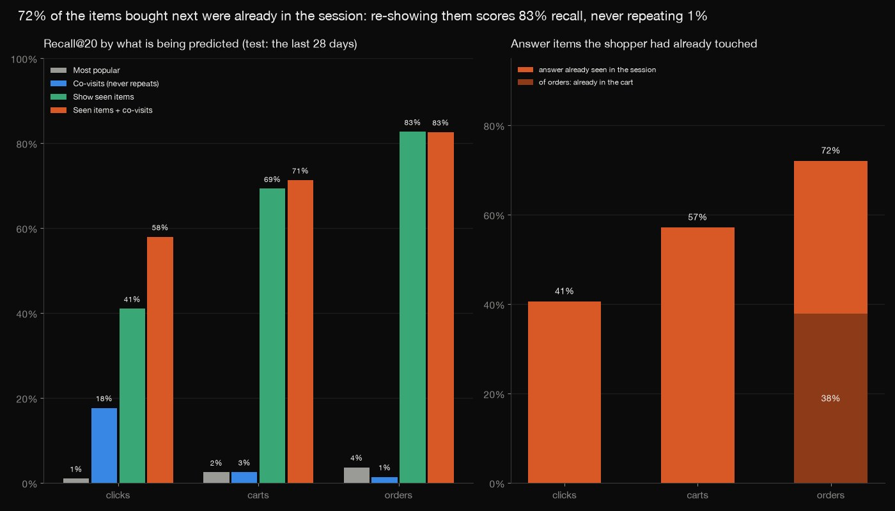
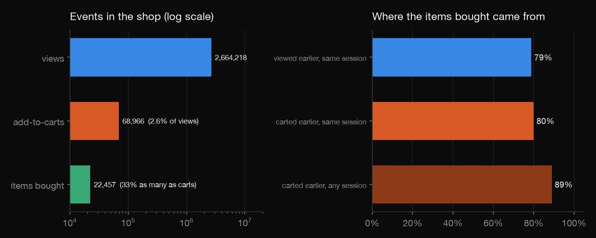
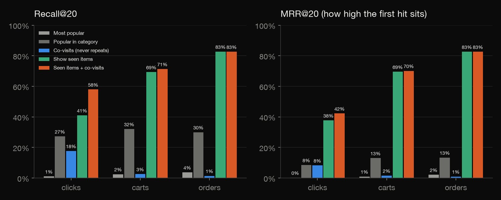
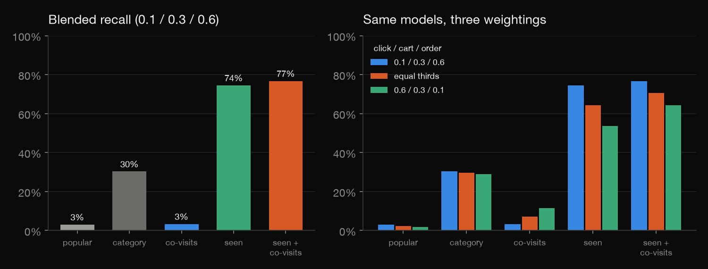
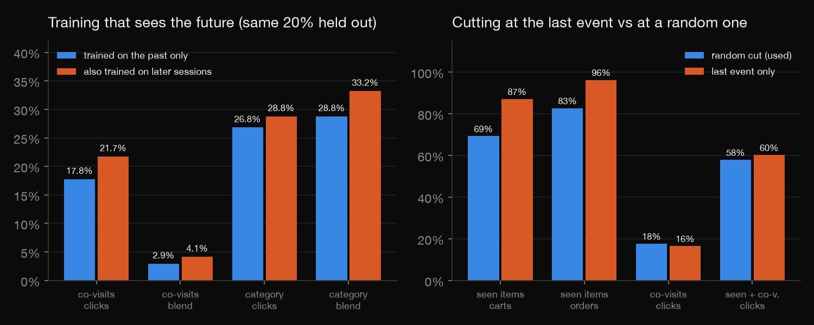
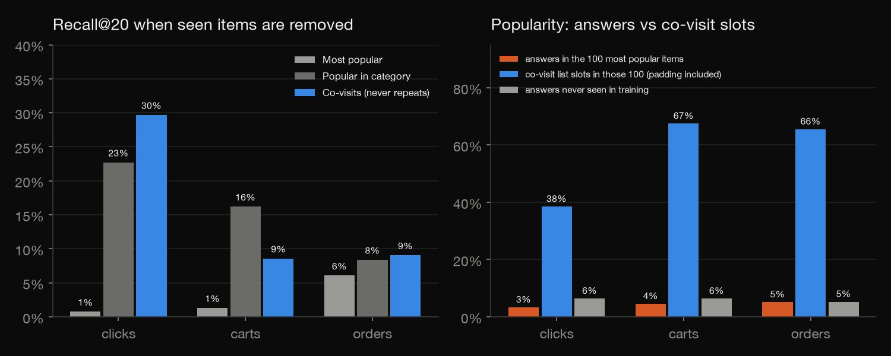

Python · Recommender systems · 2026-10
Which Items Do Shoppers Click, Cart and Buy Next?
On 1.76M sessions of a real shop, 72% of the items bought next were already in the session: showing them back scores 83% recall@20, a co-visit model that never repeats 1%. Training on later sessions lifts co-visits by 42%.

Retailrocket events of one shop (May to September 2015), from a login-free Zenodo copy: the record says CC BY 4.0 but the publisher's Kaggle page says CC BY-NC-SA 4.0, so the stricter is treated as binding and only aggregates are published. Sessions are built with a 30-minute gap (no session id). Test = last 28 days; 2,198 order sessions, so order scores are noisy. Weights and settings were fixed before scoring, not tuned. Leaky comparison also has more data.
01 — The problem
A shop wants to recommend the next item a visitor will click, put in the cart or buy. Which items do shoppers click, cart and buy next, and how different is predicting a purchase from predicting a click?
The task follows DataCamp's "Build a Multi-Objective Recommender System" (clicks, carts and orders from sessions). Its dataset, OTTO, can only be downloaded from Kaggle, so a different real shop's events are used: Retailrocket, with views, add-to-carts and purchases, from a login-free copy.
02 — What I built
Hand-written session recommenders, scored three ways at once:
- The funnel: sessions, views to carts to orders, and where purchased items came from.
- The models: most popular, popular in the category, item-to-item co-visit counts from the past only, the items already seen, and a hybrid.
- The score: Recall@20 and MRR@20 for clicks, carts and orders, and a blend with weights fixed up front.
- The traps: training on later sessions, the last-event cut, already-seen items, popularity.
- Check:
check.pyrecounts all 663 numbers in plain Python, with no data or statistics library.
03 — How it was built
- 01
Download the shop's events
Retailrocket's views, add-to-carts and purchases (109 MB read, not committed) come from a login-free Zenodo copy, by HTTP range requests so that only the three event members of the zips are read; the 900 MB item-properties file is streamed and cut to its category rows. The counts match the publisher's description (2,756,101 events).
return zipfile.ZipFile(io.BufferedReader(RangeFile(BASE.format(name)), buffer_size=1 << 20)) - 02
Build sessions and the funnel
There is no session id, so a visitor's events are split wherever two are more than 30 minutes apart, after 460 duplicate rows are dropped (366 of them double-fired carts). The funnel then follows each (session, item) pair from view to cart to purchase.
new = np.r_[True, (u[1:] != u[:-1]) | (ts[1:] - ts[:-1] > gap)] - 03
Count co-visits from the past only
Only sessions that started before the cutoff, and only their events before it, build the tables: each item is paired with the next 10 events, once per session, forward in time, separately for the later event being a view, a cart or a purchase. A query's last 5 items vote with integer weights, so ties break by item id and nothing depends on float noise.
rank = heapq.nsmallest(K, ((-s, b) for b, s in sc.items() if b not in seen)) - 04
Cut the test sessions and score
Each test session is cut at a fixed hash of its visitor and start time; the events before the cut are the input and the later ones the answer: the next view, the items carted, the items bought. Recall@20 divides hits by min(answers, 20); MRR@20 is one over the rank of the first hit; the blend uses 0.1, 0.3 and 0.6.
k = n - 1 if proto == "last_item" else 1 + h % (n - 1) - 05
Recount it all without the libraries
check.pyreads the files with the csv module, rebuilds sessions, funnel, co-visit tables, every recommendation and every metric with different code, and compares 663 numbers: counts exactly, the rest to a relative tolerance of 1e-9.order = sorted(((-v, b) for b, v in sc.items() if b not in seen))
04 — Results
The funnel. 1,761,675 sessions (one visitor's events with gaps of at most 30 minutes; the data has no session id), 22% of them with two events or more. A cart appears in 2.5% of sessions and an order in 0.81%. The median time from an item's first view to its cart is 66 seconds, from cart to purchase 236.
| Step | Count | Rate |
|---|---|---|
| Sessions | 1,761,675 | |
| with a cart | 43,924 | 2.5% |
| with an order | 14,297 | 0.81% |
| Items viewed | 2,330,774 | |
| carted later | 44,814 | 1.9% |
| Items carted | 63,750 | |
| bought later | 17,418 | 27% |

A purchase is mostly a repeat. Of the items bought, 80% were carted earlier in the same session and 89% by the same visitor at some time; 17% of order sessions have no cart event. In the test, 41% of click answers, 57% of cart answers and 72% of order answers are items already in the session.
Recall@20 for each objective. The test is the last 28 days (sessions starting after 2015-08-21); every model is built from the earlier events only. Each test session with two events or more is cut at a fixed hash-chosen position; the click answer is the next view, the cart and order answers are the items carted and bought after the cut. Co-visits never recommend an item already in the session; the 'seen items' list shows them back (carted ones first for orders); the popular and category lists are not filtered.
| Recall@20 | Click | Cart | Order |
|---|---|---|---|
| Most popular | 1.0% | 2.5% | 3.7% |
| Popular in category | 27.2% | 32.0% | 29.9% |
| Co-visits | 17.6% | 2.5% | 1.4% |
| Seen items | 41.0% | 69.3% | 82.7% |
| Seen + co-visits | 57.9% | 71.3% | 82.6% |
| Sessions | 64,819 | 5,066 | 2,198 |

Clicks and purchases want different things. Co-visits are the only model that finds new items, and they help for clicks (18%); for carts and orders the answer is what the shopper already touched, so showing it back scores 69% and 83% and the hybrid adds 2 points on carts and none on orders. Remove the seen items from answers and lists (sessions that still have an answer) and the picture changes:
| New items only | Click | Cart | Order |
|---|---|---|---|
| Most popular | 0.8% | 1.3% | 6.1% |
| Popular in category | 22.7% | 16.2% | 8.4% |
| Co-visits | 29.7% | 8.6% | 9.1% |
| Sessions | 38,503 | 1,691 | 489 |
Co-visits lead for clicks, the category list for carts, and orders are a toss-up with a small sample (489 sessions).
The blended score. The weights were fixed before anything was scored: 0.10 clicks, 0.30 carts, 0.60 orders (the weights of the OTTO competition this task follows), not fitted. Blended recall is the weighted sum of the three recalls, each over its own sessions. In the table, OTTO is those weights, Equal is a third each and Clicks is 0.6 clicks, 0.3 carts, 0.1 orders. Seen items alone reach 74%, with co-visits 77%, the category list 30%, co-visits alone 3.4%. The ranking of the models is the same with equal weights or most weight on clicks, but the co-visits climb to 11%: a blended score is a statement of what the shop wants.
| Blended | OTTO | Equal | Clicks |
|---|---|---|---|
| Most popular | 3.1% | 2.4% | 1.7% |
| Popular in category | 30.3% | 29.7% | 28.9% |
| Co-visits | 3.4% | 7.2% | 11.5% |
| Seen items | 74.5% | 64.3% | 53.7% |
| Seen + co-visits | 76.7% | 70.6% | 64.4% |

Trap: training on the future. A fifth of the test sessions are held out and scored twice: by tables built from the past only, and by tables that also saw the other later sessions (what a random hold-out does). The co-visit blend rises 42%, from 2.9% to 4.1%. The leaky model also had more data, so part of the gain is size, not leakage; either way the number is not what a shop would see tomorrow.
| Held-out 20% | Past only | + later |
|---|---|---|
| Co-visits, clicks | 17.8% | 21.7% |
| Co-visits, orders | 0.9% | 1.8% |
| Co-visits, blend | 2.9% | 4.1% |
| Category, blend | 28.8% | 33.2% |
| Seen + co-v., blend | 76.3% | 77.5% |
Trap: cutting at the last event. If every session is cut at its last event, the answer for carts and orders is usually an item just viewed. Showing seen items back then scores 87% on carts and 96% on orders, against 69% and 83% with a random cut, on 1,721 order sessions instead of 2,198.
| Seen items | Random cut | Last event |
|---|---|---|
| Clicks | 41% | 45% |
| Carts | 69% | 87% |
| Orders | 83% | 96% |
| Order sessions | 2,198 | 1,721 |

Trap: popularity. 3.3% of click answers are among the 100 items with most events before the cutoff, yet 38% of the co-visit list slots are (cart: 67%; the lists are padded with popular items when a session's items have few co-visits). 6.4% of click answers are items with no event before the cutoff, which no model trained on the past can name. The table is for clicks, the hit rate being hits over all answers in the bucket.
| Click answer | Share | Co-visit hit |
|---|---|---|
| Top 100 items | 3.3% | 31.5% |
| Rank 101-1,000 | 9.3% | 32.5% |
| Rank 1,001+ | 81.1% | 16.8% |
| Not seen before | 6.4% | 0.0% |

05 — What I'd do next
- Train a ranker on top of these candidate lists (recency, item type, co-visit scores) and tune the weights on a validation week, which the baselines here deliberately skip.
- Repeat the test on a dataset with real session ids and a category tree (OTTO), to see whether the repeat effect is this shop's habit or general.
- Test what a shop would earn: the question is not recall but whether showing seen items again, as a reminder, raises orders, which needs an experiment, not logs.